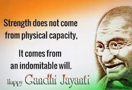
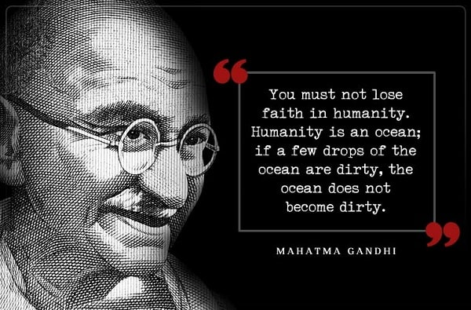
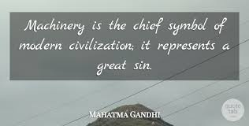

Mahatma Gandhi, an apostle of non-violence and preacher of truth, was born on October 2nd, 1869 in Gujarat. He belonged to a well-to-do family. Throughout his school days, he remained a shy boy but was a good and regular student. He later went to England to study law and became a barrister. Then he returned to India and began to practice at the Bombay High Court. But he was not very interested in the legal profession. So, he joined the struggle for India’s Independence.
Mahatma Gandhi is remembered in the whole world for their ethicalness. The 4 major weapons of mahatma is “Non-violence[Ahimsa], truth[Satya], love and fraternity “. India has got freedom by gandhi’s these virtues.
1 / 3

2 / 3
3 / 3

GANDHI JAYANTI 2020
This year Mahatma Gandhi's 151th Birthday was celebrated. I believe that "Gandhi’s views were the most enlightened of all the political men in that time. We should strive to do things in his spirit: not to use violence in fighting for our cause, but by non-participation in anything you believe is evil
GANDHI in 2020
In 2020, more than usual, it is vital to cultivate freedom from resentment. This is what made Mahatma Gandhi’s nonviolence possible.
We now live in a time when a wide variety of political mobilisations are driven by the need to allay historical wrongs and related hurt. Consequently, much of the conflict between competing groups tends to be mired in minute historical detail. For instance, those who have learnt to denigrate Gandhi emphasise specific “wrong” actions in his prolific political life — ...not his fundamental insights. This is as true for those who denounce Gandhi for being anti-Hindu as those who are convinced that he was a racist.
For all such critics, it may be worthwhile to revisit Gandhi’s famous life-defining moment on that train journey in 1893 from Durban to Pretoria. Gandhi was forcibly evicted from the first-class compartment because he was a “coloured” man. The bitter cold night that Gandhi spent on a lonely railway station in a strange country could have become a life-long trauma. As he shivered through the night in the station’s waiting room, Gandhi did consider running back home to Rajkot. But eventually, he began to think of his duty. The real culprit, Gandhi realised, was not that particular man who had him thrown off the train. That man’s behaviour was merely “a symptom of the deep disease of colour prejudice”. Therefore, resentment towards his offender was a waste of time and energy. By contrast, trying “…if possible, to root out the disease and suffer hardships in the process” seemed truly worthwhile. Gandhi, later, described the incident at the railway station as a “creative experience” that changed the course of his life. He said: “My active nonviolence began from that date.” This sequence of action and reaction illustrates powerful and universal truths.
As individuals and as members of an identity group most people have some experience of hurt, humiliation or unfairness. This common experience leads to a fork in the journey of life. Does a person, or group, choose the path of resentment or of creative resistance?
It is commonly argued that resentment must be nurtured, as a form of energy for righting old wrongs. The opposite of this, it is fearfully assumed, must be apathy or indifference. Gandhi’s life has epochal implications precisely because he showed this to be a false assumption — morally and empirically.
Resentment latches onto, and indefinitely expands, the experience of hurt. A life, or indeed a politics, based on resentment must keep finding new reasons to feel belittled. Even when it is dressed up in revolutionary fervour, resentment remains rooted in memories of powerlessness. This is why it feeds a desire for vengeance, for settling scores.
By contrast, creative resistance of the Gandhi kind arises from the ability to de-personalise the hurt and insult. This releases creative energies which are exponentially empowering and enable renewal. It is only on this track that one can seek to right old wrongs through restorative justice — a process which heals the wounds of both victims and perpetrators.
Acknowledging this truth is relatively easy. The difficulty lies in accepting that it applies to all of us regardless of our political preferences. This is what makes Gandhi Jayanti in 2020 particularly poignant.
This is the year when the Ram Janmabhoomi movement was officially granted its moment of triumph. This movement was based on Hindu resentment about destruction of temples in the past. Its far-reaching success lies in persuading enough Hindus to ignore the violence and politics of vengeance, which led up to the construction of a new temple. Freedom from resentment could be the counter-magnet that persuades them otherwise, attracts them to a different space.
However, the onus for this lies with all of us who opposed the Ayodhya movement. Just now it is advocates of “sarva dharma sambhav”, equal respect for all faiths, who are experiencing a “thrown-off-the-train” moment. We can respond with resentment and deepen the cycle of conflict. Or we can demonstrate creative resistance, which both acknowledges and transcends past hurts.
How is this to be done? There are as many answers to this question as there are individuals engaged in exploring it. We could, each one of us, experiment in the very next argument in the family on these issues. Regardless of the specific issue or dispute — freedom from resentment promises to be a winner and leveller.
Gandhi on
Science and Technology
That atomic energy though harnessed by American scientists and army men for destructive purposes may be utilised by other scientists for humanitarian purposes is undoubtedly within the realm of possibility. … An incendiary uses fire for his destructive and nefarious purpose, a housewife makes daily use of it in preparing nourishing food for mankind.
— Mahatma Gandhi

Mahatma and Machines
Father of our nation, Mohandas Karamchand Gandhi is known for many things. From his thoughts on caste, creed and religion to his teachings of ahimsa and communal harmony, the Mahatma was a man who crafted the ...
Towards An Understanding Of Gandhi's Views On Science
Gandhi, it is argued in this paper, was not anti-science as is commonly misunderstood. Through a look at his various experiments, many unrealized in his time, it is shown that ...
Mahatma Gandhi
2 October,1869-30 January, 1948
Mahatma Gandhi is very famous in India as “Bapu” or “Rastrapita”. The full name of him is Mohandas Karamchand Gandhi. He was a great freedom fighter who led India as a leader of the nationalism against British rule. He was born on 2nd of October in 1869 in Porbandar, Gujarat, India. He died on 30th of January in 1948. M.K. Gandhi was assassinated by the Hindu activist, Nathuram Godse, who was hanged later as a punishment by the government of India. He has been given another name by the Rabindranath Tagore as “Martyr of the Nation” since 1948.